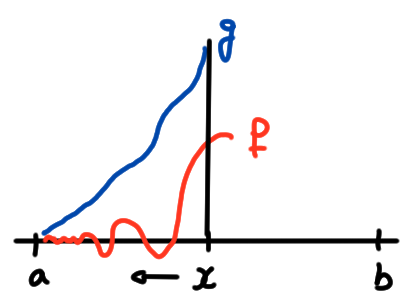
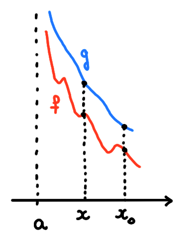

Nous allons voir maintenant un outil puissant qui, lorsqu'il est bien utilisé,
permet de calculer toutes sortes de limites indéterminées
qu'aucune des méthodes présentées précédemment ne permet de calculer.
Par exemple,
\[
\lim_{x\to 0}\frac{\sin (x)-x}{x^3}\,.
\]
Malgré tout, cet outil a un prix: il ne s'applique que dans certaines situations
très particulières (voir les hypothèses ci-dessous), et sa
justification est plus délicate.
(Règle de Bernoulli-l'Hôpital)
Soient \(f,g:]a,b[\to \mathbb{R}\) dérivables, telles que
\(g(x)\neq 0\) et \(g'(x)\neq 0\) pour tout \(x\in ]a,b[\),
La limite
\[\lim_{x\to a^+}\frac{f(x)}{g(x)}\]
est une indétermination du type ''\(\frac{0}{0}\)'' ou
''\(\frac{\pm\infty}{\pm\infty}\)'', c'est-à-dire que
\[\lim_{x\to a^+}f(x)=\lim_{x\to a^+}g(x)=L\,,\]
où \(L\in \{0,+\infty,-\infty\}\).
Si
\[ \lim_{x\to a^+}\frac{f'(x)}{g'(x)}=R\,,\]
où \(R\) est soit un réel, soit \(+\infty\), soit \(-\infty\), alors
\[ \lim_{x\to a^+}\frac{f(x)}{g(x)}=R\,.\]
Le résultat ci-dessus reste valable si on remplace partout
la limite \(x\to a^+\) par \(x\to b^-\), ou alors
\(]a,b[\) par \(]a,+\infty[\) et la limite
\(x\to a^+\) par \(x\to +\infty\), ou alors
\(]a,b[\) par \(]-\infty,b[\) et la limite
\(x\to a^+\) par \(x\to -\infty\).
Commençons par traiter le cas où \(L=0\) et \(R\in \mathbb{R}\).
Fixons un \(x\in ]a,b[\) (que l'on fera ensuite \(\to a^+\)).

Comme \(\lim_{x\to a^+}f(x)=\lim_{x\to a^+}g(x)=0\), on peut étendre \(f\) et
\(g\) par prolongement à \([a,x]\), en posant \(f(a):= 0\),
\(g(a):= 0\).
Comme maintenant
\(f\) et \(g\) sont continues sur \([a,x]\) et dérivables
sur \(]a,x[\), on peut utiliser le TAFG, et garantir l'existence d'un
point \(c_x\in ]a,x[\) tel que
\[
f'(c_x)
=\frac{f(x)-f(a)}{g(x)-g(a)}g'(c_x)\,.
\]
Ceci nous permet de récrire le quotient (puisque ni \(g\) ni \(g'\) ne
s'annulent dans \(]a,b[\)):
\[
\frac{f(x)}{g(x)}
=\frac{f(x)-0}{g(x)-0}
=\frac{f(x)-f(a)}{g(x)-g(a)}
=\frac{f'(c_x)}{g'(c_x)}
\]
Maintenant, prenons la limite \(x\to a^+\).
Comme \(a\lt c_x\lt x\), on a \(c_x\to a^+\) lorsque \(x\to a^+\), et donc
\[
\lim_{x\to a^+}
\frac{f(x)}{g(x)}=
\lim_{x\to a^+}
\frac{f'(c_x)}{g'(c_x)}=
\lim_{x\to a^+}
\frac{f'(x)}{g'(x)}=R\,.
\]
Passons maintenant au cas où \(L=+\infty\) et \(R\in \mathbb{R}\).
On a donc
\(\lim_{x\to a^+}f(x)=+\infty\),
\(\lim_{x\to a^+}g(x)=+\infty\), et la limite
\[
\lim_{x\to a^+}\frac{f'(x)}{g'(x)}=R
\]
est finie.

En préparation, fixons \(a\lt x\lt x_0\lt b\) et écrivons
\[\begin{aligned}
\Bigl|\frac{f(x)}{g(x)}-R\Bigr|
&\leqslant
\Bigl|\frac{f(x)}{g(x)}-
\frac{f(x)-f(x_0)}{g(x)-g(x_0)}
\Bigr|+
\Bigl|
\frac{f(x)-f(x_0)}{g(x)-g(x_0)}
-R\Bigr|\\
&\leqslant
\Bigl|\frac{f(x)}{g(x)}\Bigr|
\cdot
\underbrace{\Bigl|
1-\frac{1-\frac{f(x_0)}{f(x)}}{1-\frac{g(x_0)}{g(x)}}
\Bigr|}_{=:\varphi_{x_0}(x)}+
\underbrace{
\Bigl|
\frac{f(x)-f(x_0)}{g(x)-g(x_0)}
-R\Bigr|}_{=:\psi_{x_0}(x)}\\
\end{aligned}\]
Maintenant,
\[\begin{aligned}
\Bigl|\frac{f(x)}{g(x)}-R\Bigr|
&\leqslant
\Bigl|\frac{f(x)}{g(x)}\Bigr|
\varphi_{x_0}(x)
+\psi_{x_0}(x)\\
&\leqslant
\Bigl|\frac{f(x)}{g(x)}-R\Bigr|
\varphi_{x_0}(x)
+|R|\varphi_{x_0}(x)
+\psi_{x_0}(x)\,,
\end{aligned}\]
et on peut isoler
\(\Bigl|\frac{f(x)}{g(x)}-R\Bigr|\) dans cette
dernière inégalité:
\[\begin{aligned}
\Bigl|\frac{f(x)}{g(x)}-R\Bigr|
\leqslant
\frac{|R|\varphi_{x_0}(x)+\psi_{x_0}(x)}{1-\varphi_{x_0}(x)}\,.
\end{aligned}\]
Voyons maintenant comment le côté droit peut être rendu arbitrairement petit en
prenant \(x\) et \(x_0\) suffisamment proches de \(a\).
D'abord, appliquons le TAFG sur \([x,x_0]\): il existe \(c_{x,x_0}\in
]x,x_0[\) tel que
\[
\psi_{x_0}(x)=\Bigl|
\frac{f(x)-f(x_0)}{g(x)-g(x_0)}
-R\Bigr|=\Bigl|
\frac{f'(c_{x,x_0})}{g'(c_{x,x_0})}
-R\Bigr|\,.
\]
Par hypothèse, \(\frac{f'(x)}{g'(x)}\to R\). Donc en fixant \(\varepsilon\gt 0\),
on peut prendre un \(x_0>a\) suffisamment proche de \(a\), de façon à ce que
pour tout \(a\lt x\lt x_0\),
\(0\leqslant \psi_{x_0}(x)\leqslant \varepsilon\).
Ensuite, remarquons qu'à \(x_0\) fixé, on a toujours
\(\lim_{x\to a^+}\varphi_{x_0}(x)=0\).
On a donc
\[
\lim_{x\to a^+}
\Bigl|\frac{f(x)}{g(x)}-R\Bigr|
\leqslant \varepsilon\,.
\]
Comme \(\varepsilon\gt 0\) est arbitraire, on a bien montré que
\[ \lim_{x\to a^+}\frac{f(x)}{g(x)}=R\,,
\]
ce qu'on voulait démontrer.
La règle de BH, si elle s'applique de part et d'autre d'un point \(a\), permet
évidemment de calculer des limites \(x\to a\):
Étudions la limite
\[
\lim_{x\to 0}\frac{\sin (x)-x}{x^3}
\]
Clairement, \(f(x)=\sin(x)-x\) et \(g(x)=x^3\) satisfont aux hypothèses du
théorème: toutes deux sont dérivables dans un voisinage de \(x=0\), ni \(g\) ni
\(g'\) ne s'annulent dans un voisinage épointé de \(x=0\), et toutes deux
tendent vers zéro lorsque \(x\to 0\). On peut alors étudier la limite du
quotient des dérivées:
\[
\lim_{x\to 0}\frac{f'(x)}{g'(x)}=
\lim_{x\to 0}\frac{\cos (x)-1}{3x^2}=-\frac16
\]
Comme cette limite existe et est finie, on peut conclure par le théorème que
\[
\lim_{x\to 0^+}\frac{\sin (x)-x}{x^3}=
\lim_{x\to 0}\frac{f(x)}{g(x)}=
\lim_{x\to 0}\frac{f'(x)}{g'(x)}=-\frac16\,.
\]
On n'utilise surtout pas la règle de BH
pour calculer des limites fondamentales, telles que
\[
\lim_{x\to 0}\frac{\sin(x)}{x}=1!
\]
En effet si on voulait utiliser, on serait bien obligé d'utiliser le fait que
\((\sin (x))'=\cos(x)\). Or si on relit la preuve de comment on montre que la
dérivée du sinus c'est le cosinus,
on se rend compte qu'elle repose sur la connaissance de ...
\(\lim_{x\to 0}\frac{\sin(x)}{x}\)!
Donc la limite ''\(\lim_{x\to 0}\frac{\sin(x)}{x}=1\)''
doit être considérée comme fondamentale, calculée
uniquement à partir de la définition de base du sinus, dans le cercle
trigonométrique.
Même si elle est formulée pour des indéterminations qui concernent des
quotients, la
règle de BH permet en fait de calculer des indéterminations de tous les types.
Ceci se fait en récrivant la fonction dont ont aimerait calculer la limite, de
façon a y faire apparaître un quotient.
(Une indétermination ''\(1^\infty\)'')
\[\lim_{x\to +\infty}\Bigl(\frac{x}{x+2}\Bigr)^x\,.\]
Puisque \(\frac{x}{x+2}>0\) pour tout \(x\) suffisamment grand et positif, on
peut exponentier:
\[
\Bigl(\frac{x}{x+2}\Bigr)^x
=\exp\Bigl( x\ln\bigl(\frac{x}{x+2}\bigr) \Bigr)
\]
Comme l'exponentielle est continue,
on pourra rentrer la limite dedans (une fois qu'on aura vérifier que la limite à
l'intérieure existe):
\[
\lim_{x\to +\infty}
\bigl(\frac{x}{x+2}\bigr)^x
=\exp\Bigl(\lim_{x\to +\infty} x\ln\bigl(\frac{x}{x+2}\bigr) \Bigr)
\]
Étudions donc la limite à l'intérieur de l'exponentielle.
En réarrangeant, on fait apparaître une limite ''\(\frac00\)'',
traitable par BH
\[\begin{aligned}
\lim_{x\to +\infty} x\ln\bigl(\frac{x}{x+2}\bigr)
&=\lim_{x\to +\infty} \frac{\ln(x)-\ln(x+2)}{\frac1x} \\
&\stackrel{BH}{=}\lim_{x\to +\infty}\frac{\frac1x-\frac1{x+2}}{-\frac1{x^2}} \\
&=-\lim_{x\to +\infty} \frac{2x^2}{x(x+2)}=-2\,.
\end{aligned}\]
On a donc
\[\lim_{x\to +\infty}\Bigl(\frac{x}{x+2}\Bigr)^x=e^{-2}\,.\]
Avant de se lancer corps et âme dans l'utilisation de la règle de BH,
on a tout intérêt de s'arrêter un moment et se demander si elle est vraiment
nécessaire. Par exemple, considérons
\[ \lim_{x\to 0}\frac{\sin(x^7)\cos(\sin(x^8))}{x^7}\,.\]
Les hypothèses de la règle de BH sont bien vérifiées, mais est-ce qu'on veut
vraiment se mettre à dériver le numérateur? La dérivée du numérateur
ferait apparaître une expression assez lourde...
Or si on réfléchit un instant, on se rend compte que
la composée \(\cos(\sin(x^8))\) a une
limite qui vaut \(1\) (différente de zéro), donc elle ne pose pas de problème,
on peut simplement la séparer du reste,
puis faire un changement de variable \(z=x^7\), pour obtenir
\[\begin{aligned}
\lim_{x\to 0}\frac{\sin(x^7)\cos(\sin(x^8))}{x^7}
&=
\underbrace{\bigl(\lim_{x\to 0}\cos(\sin(x^8))\bigr)}_{=1}
\Bigl(
\lim_{x\to 0}\frac{\sin(x^7)}{x^7}
\Bigr)\\
&=\lim_{z\to 0}\frac{\sin(z)}{z}=1\,.
\end{aligned}\]
Parfois, on peut avoir besoin d'utiliser la règle plus d'une fois pour conclure:
L'idée utilisée dans ce dernier exemple permet de revenir sur quelque
chose que nous avons déjà rencontré dans le chapitre sur les suites.
Une preuve plus directe de la hiérarchie
Revenons sur l'étude des comportements d'une fonction à l'infini, faite
précédemment seulement pour des suites. Dans le cas des fonctions, le fait que
la variable soit continue permet des manipulations que l'on ne pouvait
pas faire avec les suites (où la variable \(n\) était discrète).
Pour toute base \(a\gt 1\), tout \(\alpha \gt 0\) et tout \(m\gt 0\),
\[
\lim_{x\to\infty}
\frac{(\log_a(x))^\alpha}{x^m}=0\,.
\]
Il suffit de démontrer le résultat pour des \(\alpha\) entiers, c.-à-d.
\(\alpha=k\in \mathbb{N}\).
On commence par poser \(y=\log_a(x)\), et donc \(x=a^y\). Or
\[
\lim_{x\to \infty}
\frac{(\log_a(x))^k}{x^m}=
\lim_{y\to \infty}\frac{y^k}{a^{my}}=
\lim_{y\to \infty}\frac{y^k}{e^{m\ln(a)y}}\,.
\]
On calcule cette limite par récurrence sur \(k=1,2,\dots\). (On peut aussi
faire
comme dans l'exemple vu plus haut, et appliquer \(k\) fois la règle de BH.)
Dans le cas où \(k=1\),
\[
\lim_{y\to \infty}\frac{y}{e^{m\ln(a)y}}
\stackrel{BH}{=}
\lim_{y\to \infty}\frac{1}{(m\ln(a))e^{m\ln(a)y}}
=0\,.
\]
Supposons alors que le résultat a été démontré pour un entier \(k\). On a alors
\[
\lim_{y\to \infty}\frac{y^{k+1}}{e^{m\ln(a)y}}
\stackrel{BH}{=}
\frac{k+1}{m\ln(a)} \lim_{y\to \infty}\frac{y^k}{e^{m\ln(a)y}}
=0\,.
\]
Soient \(f,g:]a,b[\to \mathbb{R}\) dérivables, et \(g\) telle que \(g(x)\neq 0\) et
\(g'(x)\neq 0\) pour tout \(x\in ]a,b[\). Parmi les affirmations ci-dessous,
lesquelles sont toujours vraies?
[ ]
Si \(\lim_{x\to a^+}f(x)\) et \(\lim_{x\to a^+}g(x)\) existent, alors
\(\lim_{x\to a^+}\frac{f(x)}{g(x)}\) existe.
[ ] Si \(f\) et \(g\) peuvent être prolongées par continuité à \([a,b[\),
alors \(\lim_{x\to a^+}\frac{f(x)}{g(x)}\) existe.
[ ]
Si \(\lim_{x\to a^+}f(x)\) et \(\lim_{x\to a^+}g(x)\) existent, alors
\(\lim_{x\to a^+}\frac{f'(x)}{g'(x)}\) existe.
[ ]
Si \(\lim_{x\to a^+}f(x)\) et \(\lim_{x\to a^+}g(x)\) existent, alors
\(\lim_{x\to a^+}\frac{f(x)}{g(x)}\) existe.
[ ]
Si \(\lim_{x\to a^+}\frac{f(x)}{g(x)}\) n'existe pas, alors
\(\lim_{x\to a^+}\frac{f'(x)}{g'(x)}\) n'existe pas.
[ ]
Si \(\lim_{x\to a^+}\frac{f'(x)}{g'(x)}=D\), alors
\(f'\) et \(g'\) sont bornées sur \(]a,b[\).
[ ]
Si \(\lim_{x\to a^+}\frac{f'(x)}{g'(x)}\) n'existe pas, alors
\(\lim_{x\to a^+}\frac{f(x)}{g(x)}\) n'existe pas.
[ ]
Si \(\lim_{x\to a^+}\frac{f(x)}{g(x)}=+\infty\), alors
\(\lim_{x\to a^+}\frac{f'(x)}{g'(x)}=+\infty\).
[ ]
Si \(\lim_{x\to a^+}\frac{f'(x)}{g'(x)}=D\), et si \(\alpha,\beta\) sont des
constantes, alors
\(\lim_{x\to a^+}\frac{f(x)+\alpha}{g(x)+\beta}=D\).